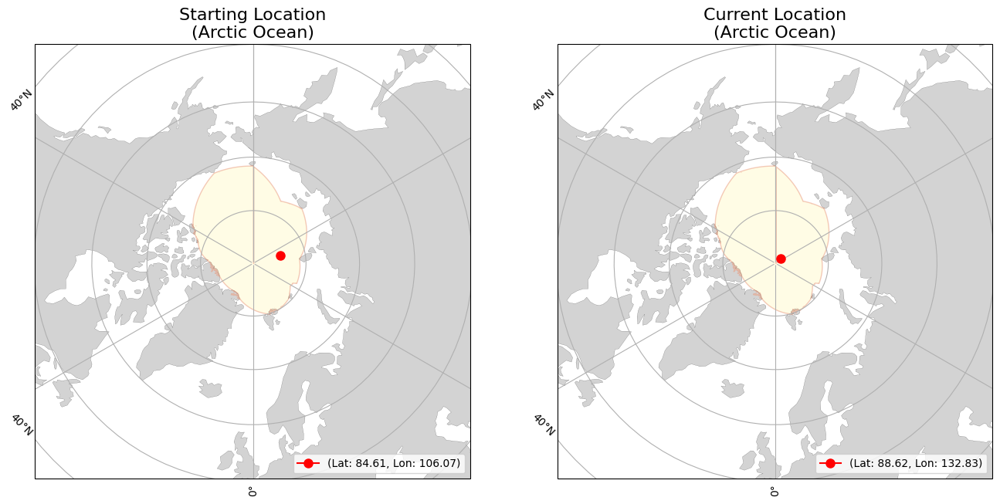
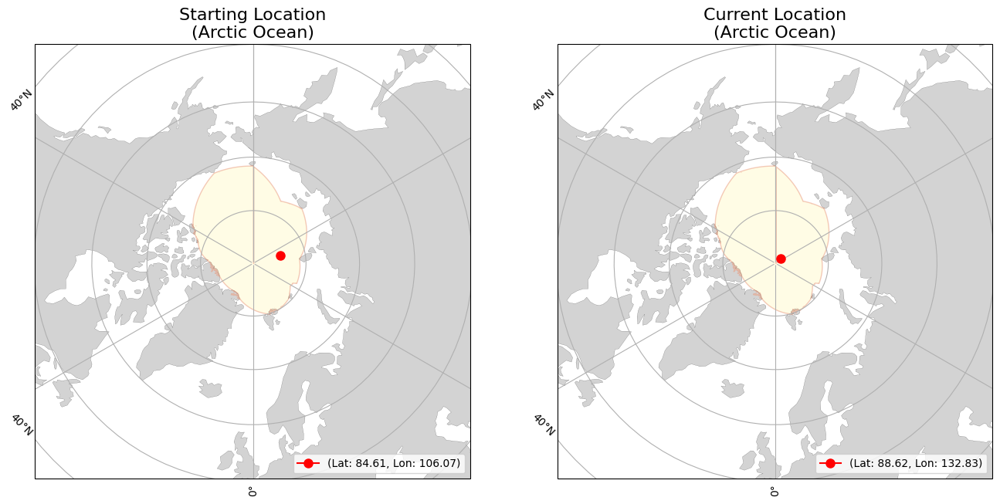

lon=106.0687
(Arctic Ocean)
lon=132.8559
(Arctic Ocean)
|
|
Buoy | Movement | Temperature | |||
|---|---|---|---|---|---|---|
| ID | 300534065282030 | Initial Position | lat=84.6129 lon=106.0687 (Arctic Ocean) |
Average Air Temperature | avg_air_temp | |
| Type | SVP | Current Position | lat=88.5408 lon=132.8559 (Arctic Ocean) |
Minimum Air Temperature | min_air_temp | |
| Start Date | 08-21-2024 | Daily Distance Mean | 9.3 | Maximum Air Temperature | max_air_temp | |
| End Date | 12-26-2024 | Daily Distance Median | 7.938 | Average Sea Surface Temperature | avg_sst | |
| Status | floating | Daily Distance Standard Deviation | 6.455 | Minimum Sea Surface Temperature | min_sst | |
| Total Distance Start to End Dates | 1106.713 | Maximum Sea Surface Temperature | max_sst | |||
 
